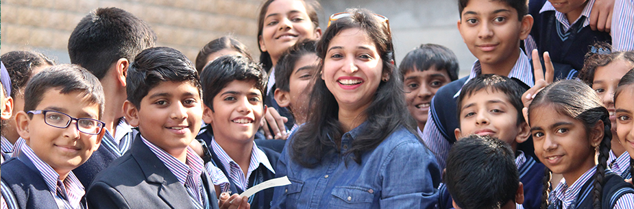
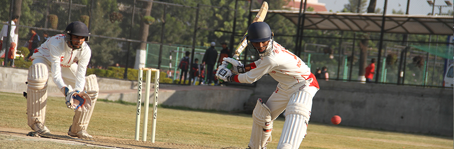

About School
 The school curriculum is based and designed as per CBSE guidelines. It has been evolved to ensure an enriching learning experience. The school holds classes from Nursery, L.K.G. and U.K.G. up to Senior Secondary stage with English as the medium of instruction. Focus being on quality education, classroom teaching is interactive and supportive and is supported by multimedia teaching aids (SMART Classrooms).
 ST.Soldier’s School is one of the leading school of Panchkula with a huge campus, excellent infrastructure, good results and dedicated and experienced faculty. The School boasts of two big playgrounds where the students can play field sports. It has a Basketball court too and planning to build one more Court and a skating rink next year. They are offered training in Cricket (also a National level Cricket Academy is run from the School grounds), Soccer, Basketball for both Boys and Girls and Hockey. We have a wide array of activities for the students on a regular basis in the time table. In the zero period, the students are divided into various Clubs, Hobbies and games. These include Yoga, Skating, Dance, Taekwondo, Field games, Indoor Games (Chess, Carom and Table Tennis), Clubs- Eco Club, Science, Library(Reading), Computer, etc. The School has an Eco Garden which is managed by the Students of Eco club. It has a wide variety of plants grown under controlled conditions.